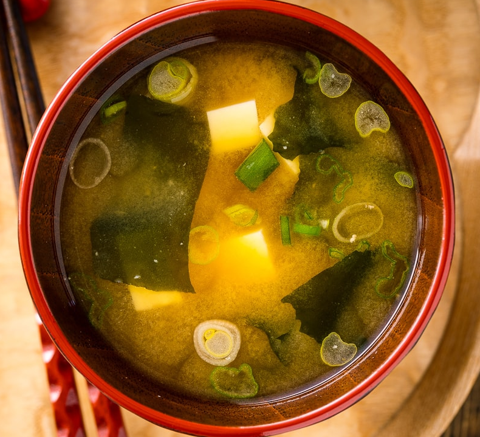

Miso Soup

Description
Try this fun and easy to make miso soup
Ingredients
- 2 cups water
- 2 tablespoons miso paste
- 1 teaspoon dashi granules (or use dashi stock)
- 1/4 cup cubed tofu
- 1 tablespoon chopped green onions
Steps
- Bring water to a simmer and stir in dashi.
- Add tofu cubes and cook for 1-2 minutes.
- Lower the heat (don't boil), then stir in miso paste until dissolved.
- Let it warm for 1-2 more minutes without boiling.
- Serve hot and sprinkle with green onions.
Home